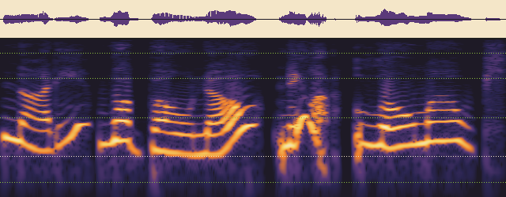
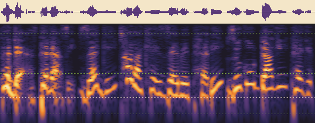
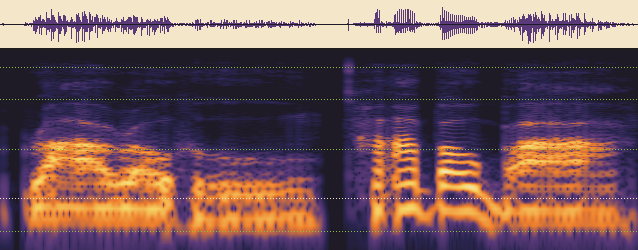
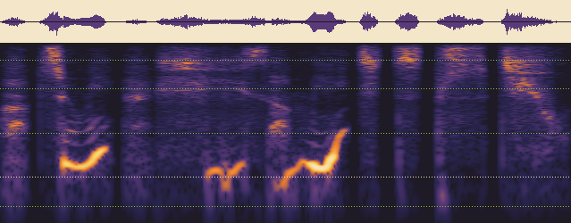
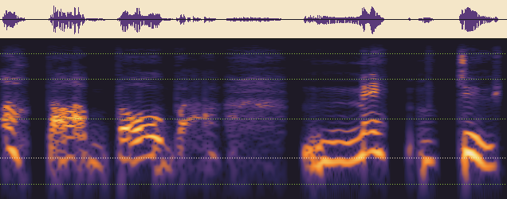
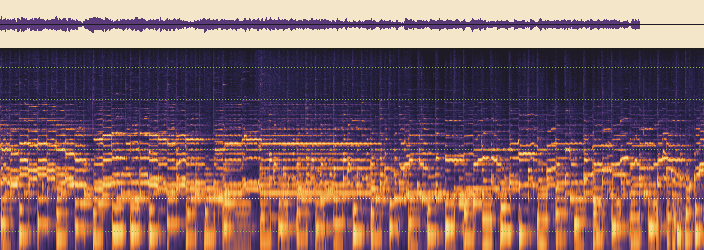
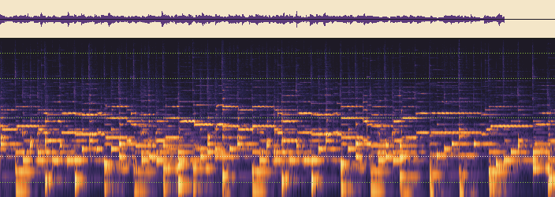
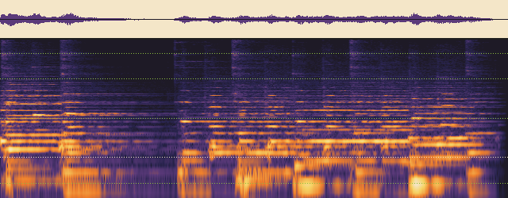

As vozes agora são um balbucio de desenho animado: sílabas inventadas, sem palavras, só ritmo e emoção
(a frase escrita continua na tela). A música foi gerada com o modelo de música do Google e editada para o jogo.
Nada disto entra no jogo antes da sua aprovação.
Ouça primeiro no alto-falante do iPhone, depois com fone
Toque nos botões para trocar frase, emoção ou opção
Nas músicas, "Emenda" toca o fim do loop emendado no começo
Vozes
"Frases" são trechos prontos de vários tamanhos (o jogo escolhe pelo tamanho da fala). "Emoções" são
as cinco variações. "Montada na hora" mostra a outra técnica: o jogo monta o balbucio sílaba por sílaba a partir da
frase escrita (mostrada embaixo do player).
Pip
voice_pip · voz-fonte Gemini "Laomedeia" (irreconhecível depois do processamento)
A menina nova na rua: curiosa, perguntadeira, alegre.
O que ouvir: Soa como uma criança (não esquilo) e nenhuma sílaba vira palavra; as perguntas sobem no fim.
Frases:
Emoções:
Montada na hora:
tom médio ≈ 399 Hz1.85× mais rápida que a fonte-19.1 a -19.0 LUFS (alvo −19)pico ≤ -1.3 dBTPtodas as verificações ok
Espectrograma (frase de 1.8 s, neutra)

Bea
voice_bea · voz-fonte Gemini "Zephyr" (irreconhecível depois do processamento)
Rápida e cheia de certeza, a irmã mais nova.
O que ouvir: A mais rápida e mais aguda do elenco; deve parecer confiante, não estridente.
Frases:
Emoções:
Montada na hora:
tom médio ≈ 409 Hz2.15× mais rápida que a fonte-19.0 a -19.0 LUFS (alvo −19)pico ≤ -1.3 dBTPtodas as verificações ok
Espectrograma (frase de 1.8 s, neutra)

Mr. Vale
voice_vale · voz-fonte Gemini "Sadaltager" (irreconhecível depois do processamento)
Senhor gentil do banco: devagar, seco, bondoso.
O que ouvir: Grave e calmo, sem 'robô'; deve contrastar bem com as crianças.
Frases:
Emoções:
Montada na hora:
tom médio ≈ 158 Hz1.40× mais rápida que a fonte-19.1 a -19.0 LUFS (alvo −19)pico ≤ -1.3 dBTPtodas as verificações ok
Espectrograma (frase de 1.8 s, neutra)

June
voice_june · voz-fonte Gemini "Achernar" (irreconhecível depois do processamento)
Cochicha segredos e segura o riso.
O que ouvir: O sussurro com risadinha deve ser charmoso e claro no alto-falante do iPhone.
Frases:
Emoções:
Montada na hora:
tom médio ≈ 368 Hz1.90× mais rápida que a fonte-19.1 a -19.0 LUFS (alvo −19)pico ≤ -1.1 dBTPtodas as verificações ok
Espectrograma (frase de 1.8 s, neutra)

Aunt Kit
voice_kit · voz-fonte Gemini "Sulafat" (irreconhecível depois do processamento)
Tia teatral e calorosa, ex-atriz.
O que ouvir: Grandes curvas de entonação, calor de adulta; nada de 'personagem fofinho'.
Frases:
Emoções:
Montada na hora:
tom médio ≈ 283 Hz1.65× mais rápida que a fonte-19.0 a -19.0 LUFS (alvo −19)pico ≤ -1.3 dBTPtodas as verificações ok
Espectrograma (frase de 1.8 s, neutra)

Música
Todas as peças partem do mesmo pedido de motivo: a batida da porta (curta, curta, longa) subindo
ré–fá–lá. O modelo nem sempre obedece tom e andamento; as vinhetas foram transpostas para terminar em ré (ou lá)
quando estavam perto.
Tema da rua
music_street_theme · lyria-3-pro-preview
No jogo: Música da rua enquanto a criança explora o bairro.
O que ouvir: O motivo da batida (curta, curta, longa) logo no começo; aconchegante e curioso, nunca assustador; a emenda do loop não deve 'pular'.
Opções:
Emenda (5 s + 5 s):
Opção 1sugestão
Valsa de livro de histórias: pizzicato, celesta e madeiras, a mais 'feltro e papel'. Combina com a Exploração opção 1.
75.8 s76 BPM32 compassos de 3tom ≈ D majorloop da fonte 58.5–134.3 s-20.0 LUFSpico -7.5 dBTPsemente 101
Opção 2
Mais 'detetive na ponta dos pés', em fá/ré menor; um pouco mais desenho animado clássico.
57.6 s75 BPM24 compassos de 3tom ≈ F majorloop da fonte 74.5–132.1 s-20.0 LUFSpico -7.9 dBTPsemente 303
Opção 3
A mais doce e nostálgica; tem um acordeão (não pedido) que puxa para feira de vila.
76.8 s75 BPM24 compassos de 4tom ≈ F# minorloop da fonte 83.3–160.1 s-20.0 LUFSpico -7.6 dBTPsemente 202
Espectrograma (opção 1)

Exploração
music_exploration · lyria-3-pro-preview
No jogo: Fundo musical discreto durante o jogo livre.
O que ouvir: Mais leve e espaçada que o tema; deve ficar 'por baixo' dos sons do jogo sem cansar; emenda do loop.
Opções:
Emenda (5 s + 5 s):
Opção 1sugestão
Variação leve da opção 1 do tema (mesma família, tonalidade vizinha); deixa espaço para os efeitos.
76.8 s75 BPM24 compassos de 4tom ≈ A majorloop da fonte 53.7–130.5 s-20.0 LUFSpico -4.5 dBTPsemente 111
Opção 2
Investigação discreta, combina com a opção 2 do tema; um pouco mais seca.
64.0 s75 BPM20 compassos de 4tom ≈ Eb majorloop da fonte 41.6–105.6 s-20.0 LUFSpico -7.3 dBTPsemente 333
Opção 3
Calma e espaçada, mas com menos identidade própria.
76.8 s75 BPM24 compassos de 4tom ≈ C majorloop da fonte 79.3–156.1 s-20.0 LUFSpico -3.1 dBTPsemente 222
Espectrograma (opção 1)

Caso resolvido (vinheta)
music_case_closed · lyria-3-clip-preview
No jogo: Toca quando o caso é fechado (carimbo 'Caso resolvido').
O que ouvir: Calor e resolução: deve soar como 'conseguimos!', terminando num acorde maior que se apaga suave.
Opções:
Opção 1sugestão
Charmosa e cintilante, termina num acorde que soa até o fim.
5.8 s96 BPMfinal em D major (transposto -1 st)trecho final da fonte 25.3–30.8 s-20.0 LUFSpico -7.0 dBTPsemente 121
Opção 2
Alegre, de flauta e clarinete, bem 'mistério resolvido' leve.
5.5 s96 BPMfinal em D major (transposto +2 st)trecho final da fonte 23.3–29.5 s-20.0 LUFSpico -6.8 dBTPsemente 242
Opção 3
A mais grandiosa (orquestra cheia): talvez para o fim da temporada.
5.9 s121 BPMfinal em A minor (transposto +2 st)trecho final da fonte 24.2–30.8 s-20.0 LUFSpico -8.7 dBTPsemente 484
Espectrograma (opção 1)

Revelação (cena)
music_reveal · lyria-3-clip-preview
No jogo: Cena da revelação depois de uma dedução certa.
O que ouvir: Sensação de 'ahá!': começa em suspense suave e abre num acorde maior luminoso; nada de susto.
Opções:
Opção 1sugestão
Celesta e harpa abrindo em cordas e sopros: maravilhamento de livro de histórias.
19.4 s120 BPMfinal em A major (transposto -1 st)trecho final da fonte 12.1–30.4 s-20.0 LUFSpico -8.1 dBTPsemente 131
Opção 2
Começa curiosa e abre num ré maior caloroso.
16.5 s96 BPMfinal em A major (transposto -1 st)trecho final da fonte 15.2–30.7 s-20.0 LUFSpico -6.6 dBTPsemente 524
Opção 3
Mais curta e doce (cerca de 12 s), de caixinha de música.
11.9 s90 BPMfinal em D major (transposto -1 st)trecho final da fonte 19.5–30.8 s-20.0 LUFSpico -7.2 dBTPsemente 262